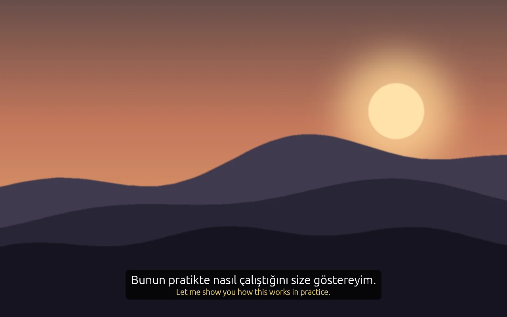

0.7.9 版已发布
电脑里播放的一切，都有实时字幕
Hammurabi 把系统声音和麦克风转成屏幕上的字幕，需要的话还能翻译。支持 Windows、macOS 和 Linux，全部在你自己的电脑上运行。
WindowsWindows，NVIDIA RTX 50 系列Windows，任意 GPU，含“说话人的声音”macOS（Apple 芯片）Linux（x64）
免费开源。无需账号。无需 API 密钥。音频从不离开你的电脑。

下载
选好系统，安装，运行
Windows 10 和 11
hammurabi-windows-x64-setup.exe
适用于任何 64 位电脑。安装程序只为当前用户安装，不需要管理员权限，之后 Hammurabi 会自动更新。SmartScreen 可能提示无法识别此应用：点击更多信息，再点击仍要运行。
Windows CUDA 版
hammurabi-windows-cuda-setup.exe
在 RTX 50 系列显卡上运行 Whisper 和翻译：话音落下半秒多一点，译好的字幕就出现了。需要较新的 NVIDIA 驱动。较旧的显卡请使用普通 Windows 版。
Windows 任意 GPU 版
hammurabi-windows-gpu-setup.exe
增加“说话人的声音”功能，用说话人本人的声音朗读每条字幕。需要支持 Vulkan、有大约 1 到 2.5 GB 空闲显存的 GPU。其语音模型仅限个人非商业用途。
Apple 芯片的 macOS
通过 Metal 使用 GPU。把应用移到“应用程序”文件夹。应用尚未经过公证，所以 macOS 会拦截第一次打开：运行 xattr -dr com.apple.quarantine /Applications/Hammurabi.app，或者先打开一次、关闭提示，再到系统设置 > 隐私与安全性里点击仍要打开。开始字幕时，请允许系统录音。
Linux x64
解压后运行 ./hammurabi。系统声音需要 PulseAudio，或带 pipewire-pulse 的 PipeWire。请使用 X11 会话：Wayland 会阻止窗口置顶和全局快捷键。
功能
为没有字幕的声音配上字幕
系统声音
电影、直播、网课和通话。只要电脑在播放，Hammurabi 就能配上字幕。
麦克风
在和面前的人交谈？对方说话时字幕随之出现，语言不通也没关系。也可以两者同时加字幕。
可选翻译
用内置的 MADLAD-400 模型翻译成 26 种语言，或通过 Ollama、LM Studio 使用你自己的本地大模型。
始终置顶的浮层
字幕浮在所有窗口之上，无边框全屏也不例外。可以拖到任意位置，并自定义文字样式。
托盘和快捷键
常驻系统托盘，从不碍事。Alt+Shift+T 开关字幕，Alt+Shift+M 移动字幕。
GPU 上飞快，CPU 上也够用
Whisper 可以在任何 CPU 上运行，在 Apple GPU 上通过 Metal 运行，在 RTX 50 系列显卡上用 CUDA 版运行。Windows 11 还可以把 Windows 实时字幕当作识别引擎。
自然翻译器
为游戏和电影而生：快速翻译器逐字直译，它却能读懂俚语和语气。在 Windows 上，任何显卡都能用。
屏幕上的字幕
自带字幕的游戏，可以直接读字幕，不必靠听。人名和俚语按原文呈现，一句台词往往还没说出口就已经翻译好了。开启遮住游戏的字幕后，译文会正好盖在游戏字幕上将其遮住，屏幕上和直播里都是如此。仅限 Windows。
直播字幕
打开以网页提供字幕，再把 http://127.0.0.1:7460 作为浏览器源添加到 OBS。把游戏画面延迟半秒，观众就能在台词说出的同时看到字幕。
朗读
比起看，更想听？Hammurabi 可以用你电脑上已有的语音，把每条完成的字幕读出来；如果开了翻译，就读译文。它说话时会暂停收听，所以自己的声音永远不会混进字幕。台词来得比它读得快时，它会加快语速，并跳过超过十秒的旧台词，始终跟上画面。按心情挑一个语音角色：Iris、Ruby、Owen、Miles、Grace 或 Skye，从沉稳舒缓到轻快明亮。每个都可以先点播放试听。一切都留在你的电脑上。
声音不该止步于你说的语言。Hammurabi 把电脑里的每一个声音变成你能读懂的文字，而且一秒钟都不会发送出去。
使用方法
设置一次，之后就不用操心
- 选择音源在托盘菜单里选择系统声音、麦克风，或两者。
- 选择语言保持自动检测，或指定说话的语言以提高准确度。如需翻译，打开翻译并选择目标语言。
- 按下快捷键字幕出现在浮层中。再按一次 Alt+Shift+T 即可隐藏。应用会继续在托盘中运行。
- 在设置中微调语音识别模型、翻译引擎、字幕大小、颜色、背景、行数和停留时长。Hammurabi 还可以登录时启动。

隐私
你的音频只留在你的电脑上
语音识别和翻译都在本地运行，你听到的、说出的任何内容都不会上传处理。不用注册账号，中间也没有我们的服务器。唯一的网络流量是从 Hugging Face 下载模型，以及在 GitHub 上检查新版本；在 Windows 上，这一步也会下载新的安装程序。如果你选择用本地大模型翻译，字幕会发送到你电脑上的那个服务。朗读使用操作系统自带的离线语音。代码在 GitHub 上公开，你可以亲自查看。详情请见隐私政策。
常见问题
大家常问的问题
免费吗？
免费。Hammurabi 以 MIT 许可证开源。没有付费版，没有试用期，也不用购买 API 密钥。
Windows 提示找不到 MSVCP140.dll
0.7.6 之前的版本需要 Visual C++ Redistributable，有些电脑上没有。重新下载安装程序并运行即可：它会覆盖安装旧版本，并附带这个文件。
应用有中文界面吗？
有。Hammurabi 支持英语、土耳其语、西班牙语、葡萄牙语和中文界面，系统语言是其中之一时就会以该语言打开。可以在设置 > 常规中更改。字幕和翻译支持的语言远不止这些。
我该下载哪个版本？
在 Windows 上，只有 NVIDIA RTX 50 系列显卡才选 CUDA 版，其他人都用普通 Windows 版。想要“说话人的声音”就选 GPU 版。Mac 用户选 macOS 版（仅限 Apple 芯片），Linux 用户选 tar.gz。
为什么 Windows 或 macOS 会对这个应用发出警告？
安装包暂时还没有用付费证书进行代码签名。在 Windows 上，点击“更多信息”，再点击“仍要运行”。在 macOS 上，到“系统设置 > 隐私与安全性”中点击“仍要打开”，或者用 xattr -dr com.apple.quarantine /Applications/Hammurabi.app 去掉隔离标记。
它会把我的音频发到别处吗？
不会。Whisper 在你的电脑上运行，翻译也是。什么都不会上传。
速度有多快？
在较新的 CPU 上，默认模型跟得上正常语速。在 RTX 50 系列显卡上用 CUDA 版，话音落下半秒多一点，译好的字幕就会出现。电脑较慢的话，在设置里选 tiny 或 base 模型。
能给游戏加字幕吗？
无边框和窗口化的游戏可以。Windows 上独占全屏的游戏会盖住所有其他窗口，所以浮层无法显示在它们上面。
快捷键没反应怎么办？
Windows 用 Alt+Shift 切换键盘布局，可能会吞掉这个快捷键。请在设置 > 常规中更改。在 Linux 上，全局快捷键需要 X11 会话。
和 Babil 有什么区别？
Babil 为浏览器里的视频加字幕。Hammurabi 为整台电脑和你的麦克风加字幕，所以桌面应用、通话和面对面交谈也都能用。
为什么叫这个名字？
汉谟拉比（Hammurabi）曾统治巴比伦，而 Babil 是巴比伦的土耳其语名称。这款桌面应用是那个浏览器扩展的兄弟。
menzo 的更多作品